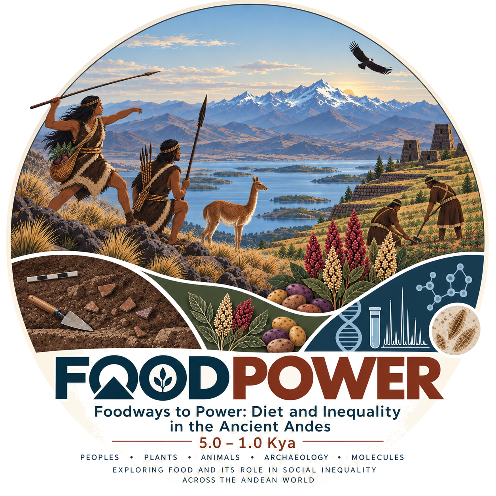

5.0–1.0 Kya · Ancient Andes
Foodways to Power
Investigating how food, diet, and changing foodways shaped social inequality in the ancient Andes.
Explore the projectThe project
How did food become connected to power and inequality?
FOODPOWER investigates the sociopolitical roots of food inequality and the emergence of “power foods” in the ancient Andes. The project examines how access to foods such as camelid meat and maize became increasingly differentiated as societies transformed from late hunter-gatherer communities toward increasingly complex societies and states.
FOODPOWER
Peoples · Plants · Animals · Archaeology · Molecules
Researching food and its role in social inequality across the Andean world.
Funded by

Funded by the European Union
Marie Skłodowska-Curie Actions · Horizon Europe
Grant Agreement No. 101278097